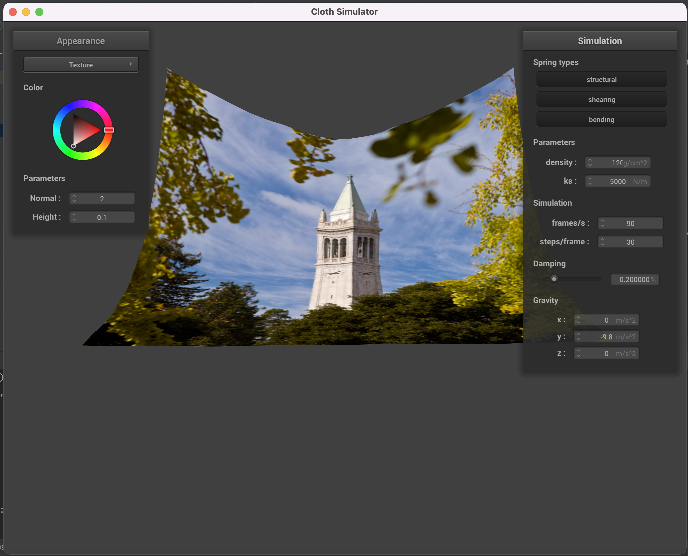

Overview
Overall, in this project, we primarily focused on how to implement the simulation of a cloth as it interacts with objects in its surrounding and its environment as well as itself. Additionally, part of our project was focused on creating a set of shaders for our object to represent how it is colored in response to light within the image as well as how it can map its unique shape over time to different provided textures and distinctions within the image. We implemented the first stages of this project using a system of masses and springs, accounting for the shearing, bending, and structural constraints of our cloth and implemented the dynamics and physics of collisions with different objects in the image using mathematical equations for surface and object interactions, as well as different forms of numerical integration and force calculation over the point masses representing the cloth. Once completed with these tasks, we could model the movement of the cloth over time as it interacted with objects in the scene and could implement different shader programs in OpenGL to model the perception and shading of the cloth as it interacted with light.
Task 1: Masses + Springs
In this part of our project, we first implemented our grid of masses and springs within Cloth::buildGrid() by iterating through our cloth (through the height first then width) in order to place point masses in row-major order based on either their vertical or horizontal orientation. We would calculate the position of the current point mass based on our index of the number of horizontal and vertical points within our grid, then depending on the orientation also calculate a random scaled value of z between -0.001 and 0.001 and created our point mass XYZ coordinates corresponding to this orientation and whether this point mass was pinned. Once we had created all these masses and placed them within our row-major point mass vector, we could iterate through all of our height and width points (as we had previously) and add our shearing, structural, and bending constraints based on if statements of whether our current point mass has a point mass one or two columns or rows back (or diagonal). If a point mass exists as these coordinates, then we would add a spring for any one of our constraints they met according to the project specification for shearing, bending, and structural constraints. Once we completed this, our full grid of point masses and springs would be initialized, and since we iterated our for loops through height then width, our spring and point mass vectors would be initialized in the correct row major order.
Following, here are a few screenshots of our pinned2.json scene with a viewing angle to show the cloth mesh structure of our point masses and springs.
Additionally, we have screenshots of our wireframe showing no shearing constraints (and structural and bending constraints), only shearing constraints, and finally all constraints (in order):
Task 2: Numerical Simulation
When varying the value of ks, we see that the cloth acts in a much more flimsy manner when our value of ks is low as compared to the cloth acting like a very rigid structure with few bends or gravity influences on parts of the cloth when our value of ks is high. Overall, a high value of ks makes our cloth act rigidly and where every point mass in the cloth is moving somewhat together and constrained, while a low value of ks allows the cloth to act more “stretchy” and many parts of the cloth can move somewhat less constrained and more independently. This intuitively makes sense as a high ks would increase the amount of spring force between point masses in the cloth so the cloth moves in a more constrained fashion, while a low ks allows parts of the cloth to move more independently from each other. Screenshots of our cloth moving with a low ks versus a high ks are shown below:
When varying the density of the cloth, we see that changing the density has a similar effect on the cloth. A high density of the cloth creates more bends towards the top of the cloth once the simulation is complete as the effect of gravity on the cloth is more pronounced since each part of the cloth is heavier due to increasing the density. When decreasing the density of the cloth, there are less independently moving parts of the cloth since the effect of the force of gravity is lessened to due a smaller mass and thus the spring forces between individual point masses accounts for a greater component of force on each point mass and thus the cloth moves more uniformly as shown in the below screenshots of our cloth moving through the simulation with varying density.

When varying the damping, one thing we see is that the cloth falls much slower when increasing the damping to very close to 1, while the cloth falls quite fast when decreasing the damping to close to 0 and the cloth also moves around a lot more through the simulation when having a low damping coefficient. Additionally, we see that the cloth often folds back upon itself when the damping coefficient is quite low, while the cloth moves moreso as one when the damping coefficient is much higher since there is much more energy lost to random real-world criteria when the damping coefficient is high as compared to when we set it low (explaining why the cloth moves around a lot since energy isn’t lost as much when our damping coefficient is high). We can see the effects of varying the damping coefficient in the screenshots below:
Further, below is a screenshot of our cloth in pinned2.json with normal parameters just for reference:
Below is the screenshot of the cloth in its final resting state for the pinned4.json scene using the default parameters:
Task 3: Object Collision
From our attached screenshots below, we see that when varying ks, there is an effect on the movement and resting structure of the cloth on top of the sphere. More specifically, when having a low value of ks (ks = 500N/m), we see that the cloth is much closer to mimicking the natural contours of the sphere and rests more naturally on top of the sphere as opposed to bunching up together with itself. In contrast, when the value of ks is high (ks = 50000N/m), we see that the cloth doesn’t naturally rest much on top of the sphere and rather has parts of the cloth resting above the sphere and even has parts that are more elevated above the sphere. We see that this is likely the case since with a low ks, the cloth has much less contracting spring force between its point masses so the force of gravity on each point mass is more pronounced and thus it is more inclined to rest more on the sphere and mimic the natural contours of the sphere it is resting on; however, with a high spring constant the spring contracting force between point masses is much higher so the effect of gravity isn’t as large of a component of the total force on each point mass and rather each point masses’ force vector is inclined more in the direction of its connected springs so thus the edges of the cloth are resting higher on the incident face of the sphere as parts of the cloth have more force tied towards each other. We see these differences most clearly in the accompanying screenshots below:
Attached below, we also have a screenshot of the cloth colliding/interacting with the plane, lying peacefully at rest on the plane with our texture shader:
Task 4: Self-Collision
Attached are four screenshots of our our cloth self-collision throughout the simulation, starting with an initial self-collision and ending more or less at a restful state:
We see that when varying the density of our cloth that having a low density allows the cloth to fall and self-collide at a slightly slower pace than when having a high density, and as a result the cloth could fall in a more spread-out fashion when the density is lower. In contrast, the cloth falls faster and more onto itself when having a high density as the force of gravity on the cloth is higher as it has more mass, so thus it falls more onto itself when having a high density, and when the density is low the force of gravity is lower so it falls slower and can spread out more when the top parts of the cloth are descending, as shown in the screenshots below:
When varying the value of ks, we see that a high value of ks has a similar effect to when our cloth density is low, and that a low value of ks has a similar effect to when our cloth density is high. More specifically, when having a high value of ks our cloth fals in a more spread-out manner while a low ks value has our cloth fall in a series/sequential manner where it falls mainly directly down and on top of itself. This intuitively makes sense as a low spring constant means that there isn’t a lot of contracting and opposing forces within the cloth so it will fall down mainly uninhibited and with its point masses not having much force on top of them other than the force of gravity; however, with a high ks the spring forces between point masses are high and thus the forces within the cloth are high and the cloth would fall more inhibited by the forces between its point masses and thus it would fall in a more spread-out manner, as the spring forces internal to the cloth occupy a larger proportion of the total force for each point mass as compared to the force of gravity. We see these changes in actuality in the screenshots below:
Task 5: Shaders
For this part, our job was to implement a bunch of unique shader programs for our cloth simulations. Essentially, these shader programs work by using the GPU to perform rote computations on the pixels within the scene or within our objects to compute how they should be shaded correctly. In contrast to our previous project which used the CPU to perform complex calculations for raytracing our pixels, our shader programs here can use OpenGL and take over the GPU since shading is just simple mathematics that can run in parallel on our GPU, and thus can create large speedups in render times. Specifically, our shaders are programs that have a vertex and fragment shader where the vertex shader performs transformations upon our vertices in the image and potentially modify their normals, and these fragment shaders take the fragment input (parts/regions of our image after rasterization) and provide an output color for how to shade this part of our image. This part of the graphics pipeline occurs in tandem to the rest of the rendering process where the fragment or vertex input is given and an output 4-dimensional color is provided for how to shade the cloth and objects in the simulation.
One specific shader we wrote was the Blinn-Phong shading model. In this model, we combine our perceptual observations by providing shading from ambient light, from diffuse reflections, and finally from specular highlights. Here, the Blinn-Phong model provides shading based on the intensity in the view direction, where our image would logically be brighter near the mirror reflection direction and thus we increase our shading by the specular component of lighting which is proportional to the half vector near the normal in the mirror reflection direction. By combining the ambient light and diffuse reflections with these specular highlights, we add more light into the image at spots near mirror reflections, as well as including color from existing lighting and reflections in the scene from our ambient and diffuse components. Thus, objects close to reflecting surfaces now have much higher lighting and better shading since our specular highlights factor accounts for this, and all of these lighting components are added for each fragment in our final Blinn-Phong shading model.
Following are the images of the Blinn-Phong shading model, with our ambient, diffuse, and specular components of the image followed by the full Blinn-Phong shading model:
Below is an image of our texture mapping shader when using a custom texture (in this case, a black and blue “electric” texture):
Following are the images of our bump and displacement mapping in order, using a custom texture. Following are the bump and displacement mapping with coarseness adjustments to 16 and 128, in order. We see that the main differences between the bump and displacement mapping are with how the textures are placed upon the cloth and sphere – with bump mapping we see that the textures are on the cloth and the textures are also on the sphere with the sphere and cloth still taking up the same structure and space; however, with displacement mapping we see that the vertex normals and the vertex positions are different and are mapped to the contours within the texture. More specifically, we see that in displacement mapping the grooves of the texture change the “edges” of the sphere to be more in line with the grooves of the texture and to not be as spherical when modeling the provided texture. In essence, the displacement mapping is much more coarse than the bump mapping since it now takes on more of the shape of the texture as opposed to retaining the full shape of the sphere and the full shape of the cloth, causing slight differences in cloth-sphere interaction and a different shaping of the cloth-sphere interaction. When changing the sphere mesh coarseness, we see these differences more pronounced, with the sphere object taking more of the texture shape as opposed to a spherical shape in the displacement mapping as opposed to the bump mapping, and the cloth having more pronounced bumps corresponding to the texture as opposed to just mimicking the texture on the surface of the cloth and sphere.
Finally, we have the image of the mirror shader on the cloth and sphere as follows: